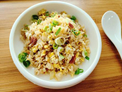
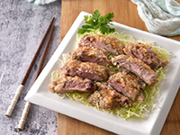
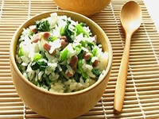
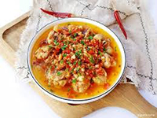
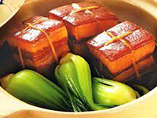
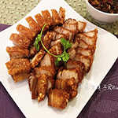
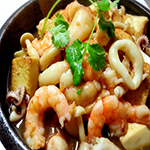
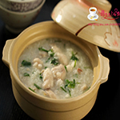

中式料理
【培根洋蔥蛋炒飯】
利用培根的油脂與鹹味，加上洋蔥自然鮮甜味，讓整盤炒飯好吃又美味
【芋泥鴨】
一層芋泥、一層鴨肉，外皮炸得像餅乾一般酥脆，一口咬下，綿密濃郁的芋頭香氣與鴨肉的油脂一同化入嘴中；用舌頭一抿，肉和芋頭不分彼此的纏綿不止。這是最精緻、費時的功夫菜，開宴時必然要點上一道以饗賓客。
【上海砂鍋菜飯】
油亮的白飯與青江菜、油脂組成的盛宴，鍋巴爽脆口感增添風味，米飯吃起來彈牙可口，比起一般白飯，香氣也更加誘人，讓人不自覺一碗接著一碗。
【剁椒雞】
多層次的辣味，在剁椒雞精緻而含蓄內斂的調味中尤為突出，滑嫩的豬血隱藏其中，和香嫩雞肉一起拌白飯入口，喜歡吃辣的朋友別忘了來上這道！
【東坡肉】
肥瘦勻稱的東坡肉，精華都隱藏在肥肉之中，豬肉的香氣、滷汁的精華，全部隨滑嫩的肥肉與軟Q的豬皮、細緻的瘦肉一同下肚，隨之而來的，是扒上幾口飯的衝動，非常下飯
港式飲茶
|  |  |  | ||
| 【脆皮燒肉】 | 【鮮蝦魚卵燒賣】 | 【海鮮豆腐煲】 | 【鮮蝦腐皮捲】 | 【生滾魚片粥】 |